Reporte del proyecto · identificación con la longitud de arco de la firma espectral · octubre de 2026
Marcar en cada imagen qué material hay en cada píxel, reconociéndolo por la forma de su firma espectral y midiendo esa forma con la longitud de arco. La meta era hacerlo simple: seguir el cuaderno original y cambiar solo lo necesario.
4 imágenes hiperespectrales de Cartagena de 750 × 750 píxeles y 380 bandas (855 MB cada una).
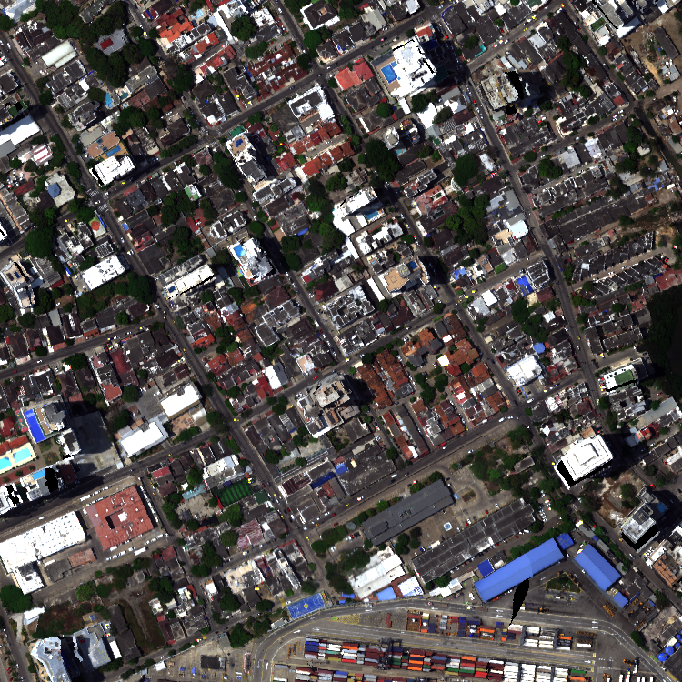
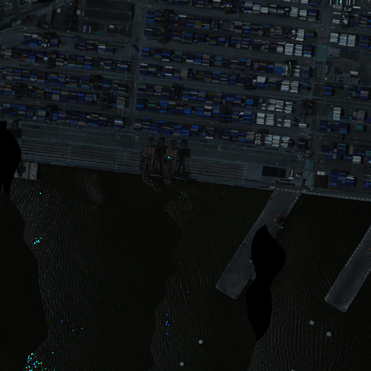
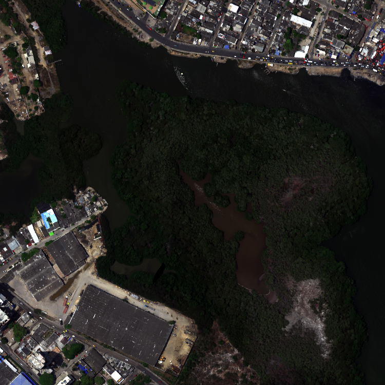
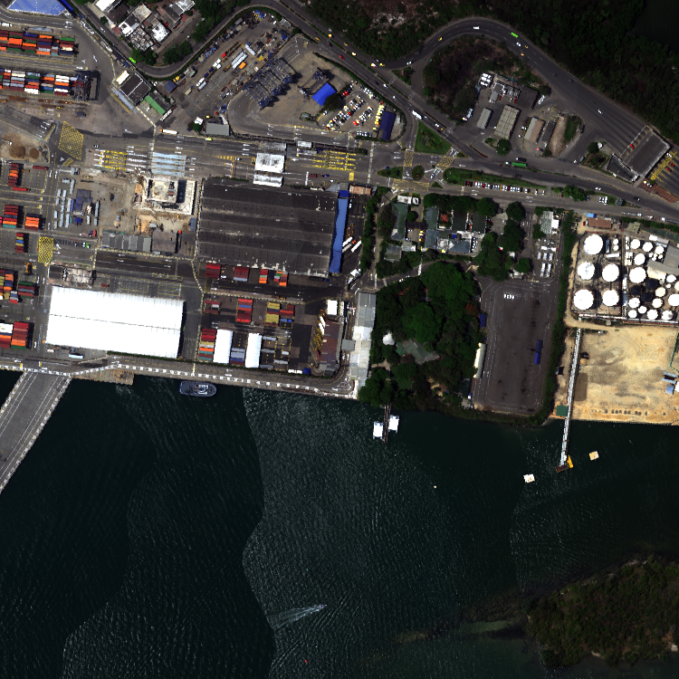
Los puntos de muestra que llegaron estaban en archivos sueltos de distintos formatos (txt, csv, xlsx, docx). Los organizamos en una carpeta
por imagen (imagen/, recuadros/, muestras/, puntos/, originales/), sin borrar ningún original.
Cada píxel se resume en 2 números: cuánto sube y baja su firma en 2 tramos de bandas, L = Σ |R(i+1) − R(i)|.
Se compara con los 2 números de la firma promedio del material (similitud = 100·(1 − |A−B| / (|A|+|B|))) y se pinta si
llega al umbral. El paso a paso completo, con figuras, está en el documento “Cómo reconocemos materiales con la longitud de arco”.
| Herramienta | Para qué |
|---|---|
generar_notebooks.py | Arma un notebook por imagen con todo el método, igual al cuaderno original. Para el agua lee recuadros;
con --muestras lee los materiales nuevos y los compara entre sí. |
marcar_recuadros.py | Marcar recuadros de muestra con el mouse sobre la imagen (OpenCV). |
| ImageJ | Marcar a mano los píxeles de los materiales nuevos y exportarlos en CSV (x,y). |
| Repositorio en GitHub | Trabajo en equipo: cada uno sube sus muestras en su rama y se revisan antes de unirlas. |
Aplicamos el método a todos los materiales con los puntos de muestra que llegaron.
| Imagen | Material | Accuracy | % de la imagen marcado | Cómo se veía |
|---|---|---|---|---|
| c4 | Agua salada | 0,86 | 39 % | Bien |
| c2 | Agua salada | 0,75 | 58 % | Bien |
| c3 | Agua dulce | 0,95 | 31 % | Bien |
| c3 | Vegetación | 0,50 | 69 % | También marcaba los barrios |
| c2 | Contenedores | 0,67 | 39 % | Zonas mezcladas |
| c4 | Contenedores | 0,60 | 58 % | Marcaba toda la tierra |
| c1 | Techos no metálicos | 0,69 | 99 % | Marcaba casi toda la imagen |
Decisión: quedarnos con lo que pasaba de 0,7, que era solo el agua, y entender por qué fallaba lo demás.
Revisando, vimos que varios puntos de “agua” caían en tierra. Marcamos a mano recuadros donde seguro había agua (y otros donde seguro no).
| Imagen | Material | Precisión | % marcado |
|---|---|---|---|
| c4 | Agua salada | 0,98 | 42 % |
| c3 | Laguna café | 0,94 | 27 % |
| c3 | Río | 0,50 | 97 % |
| c2 | Agua salada | 0,53 | 88 % |
Antes de tomar el mínimo, descartamos las muestras cuya similitud queda por debajo de Q1 − 1,5·(Q3 − Q1) (la regla del diagrama de caja). Si no hay ruido no se quita nada; el umbral sigue siendo el mínimo, pero de muestras limpias.
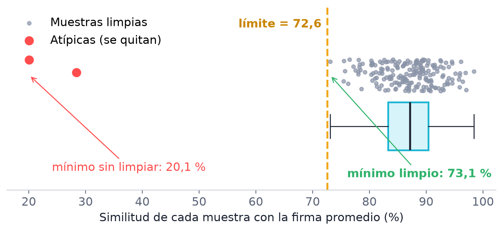
| Imagen | Material | Precisión antes → después | % marcado antes → después |
|---|---|---|---|
| c3 | Río | 0,50 → 1,00 | 97 % → 19 % |
| c2 | Agua salada | 0,53 → 0,84 | 88 % → 49 % |
| c3 | Laguna café | 0,94 → 0,98 | 27 % → 11 % |
| c4 | Agua salada | 0,98 → 1,00 | 42 % → 39 % |
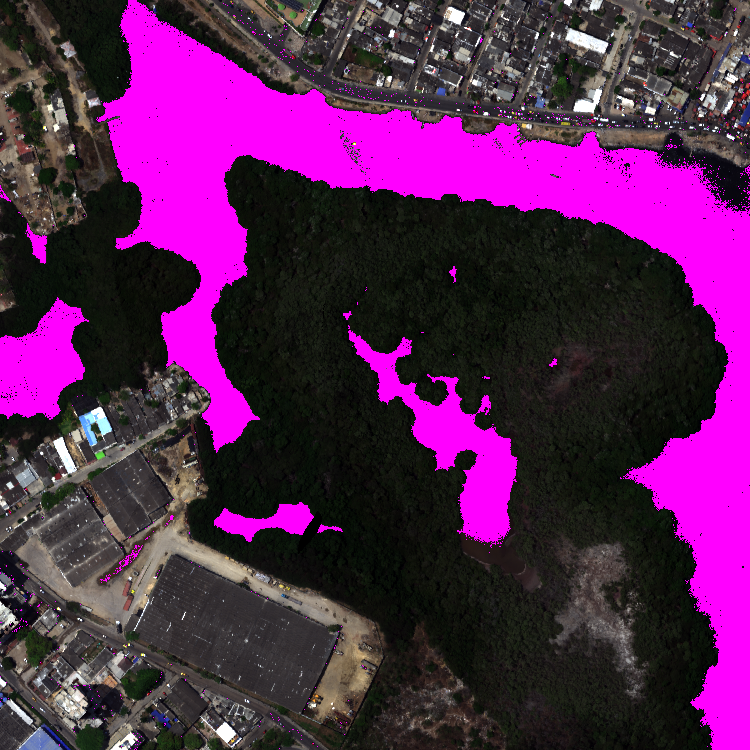
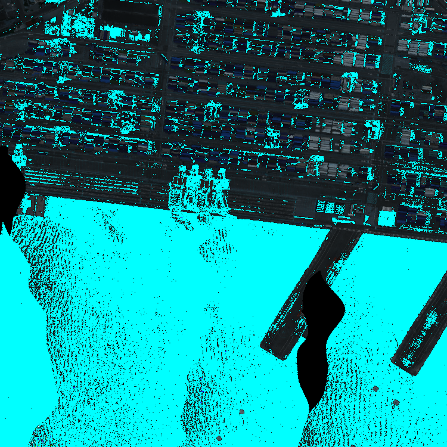
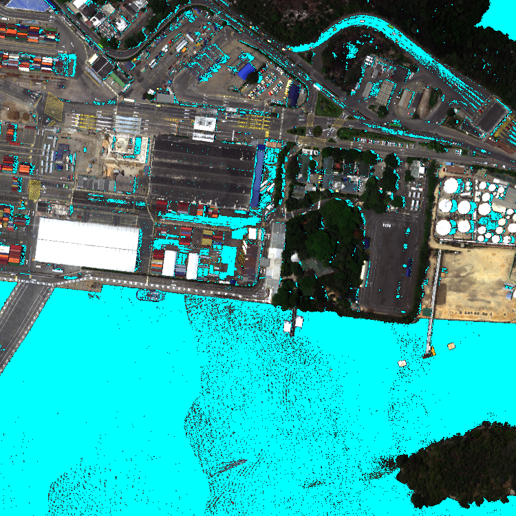
Empezamos de cero con muestras nuevas, marcadas a mano en ImageJ, de asfalto, techos (lámina, teja, concreto) y vegetación. Como no hay un “otros” para cada material, cada material se compara contra los demás de la misma imagen, y al final cada píxel se pinta con el material más parecido. Resultados (con la limpieza de atípicas):
| Imagen | Material | Precisión | % marcado |
|---|---|---|---|
| c1 | Asfalto | 1,00 | 17 % |
| c1 | Techo de concreto | 1,00 | 14 % |
| c1 | Techo de lámina | 0,77 | 11 % |
| c1 | Techo de teja | 0,56 | 30 % |
| c1 | Vegetación | 0,72 | 12 % |
| c3 | Asfalto | 1,00 | 4 % |
| c3 | Vegetación | 1,00 | 51 % |
| c4 | Asfalto | 1,00 | 35 % |
| c4 | Techo de concreto | 0,98 | 6 % |
| c4 | Vegetación | 0,56 | 16 % |
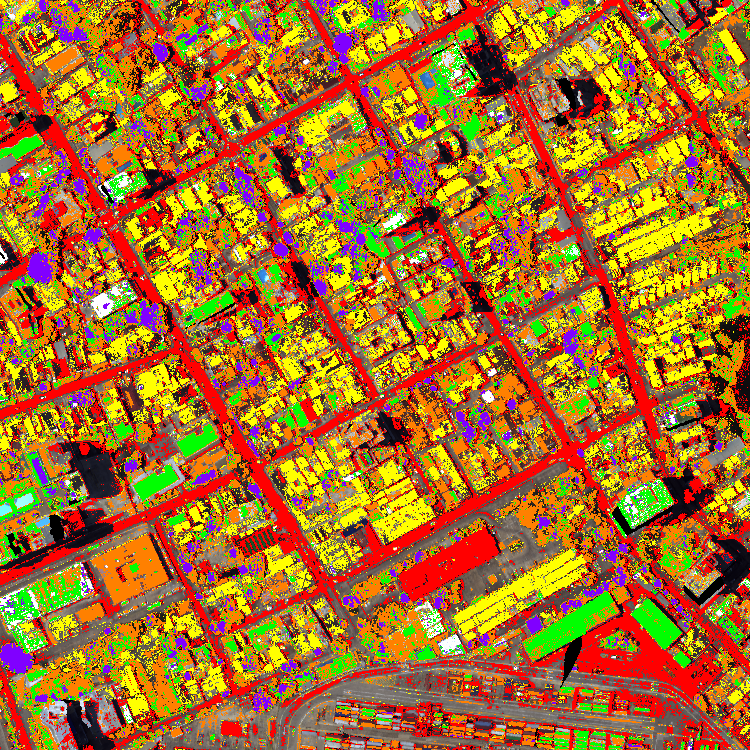
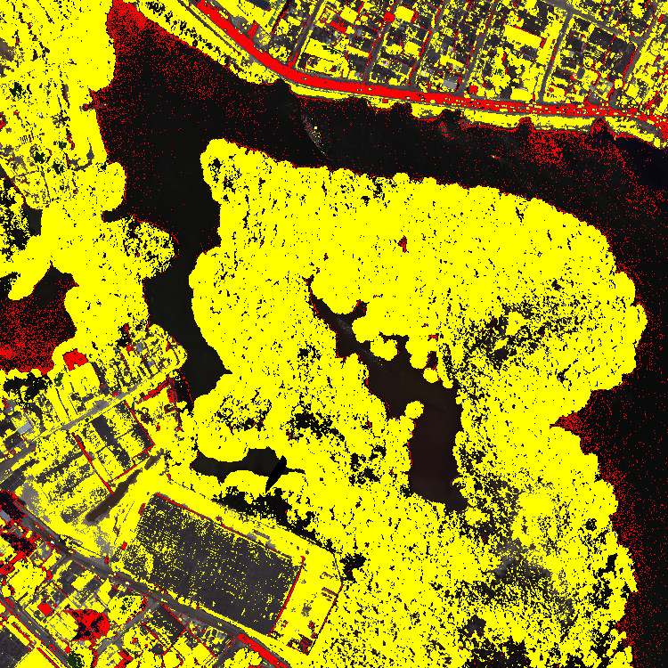
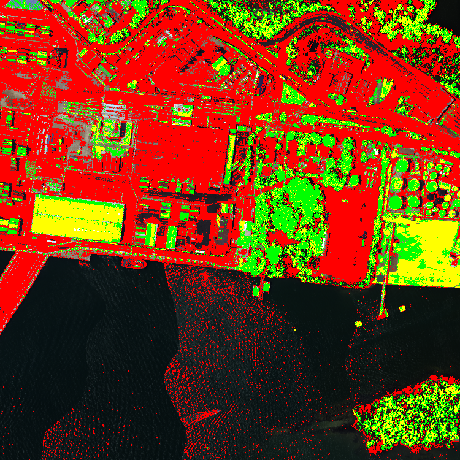
Resumir la firma de cada píxel en 2 longitudes de arco basta para separar materiales con formas distintas, siempre que las muestras estén limpias. Con un cambio pequeño (quitar las muestras atípicas antes de tomar el mínimo), el agua pasó de fallar a identificarse bien en las 3 imágenes, y el asfalto y el concreto también se separan bien. Con más materiales marcados, el mapa de cada imagen quedaría completo.